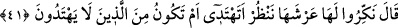
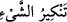
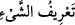

geceler boyu münâcâta devam etmesinin sonucudur. Su üzerinde yürüme, ya malıyla
veya çalışıp kazanarak aç olanı doyuran, çıplak olanı giydiren için ya da câhil birisini
öğreten veya dalâlette olanı irşad eden içindir. Çünkü bu iki sıfat, hissî ve ilmî hayatın
sırrıdır. Bunlarla su arasında açık bir münâsebet vardır. Kim o ikisini sağlam yaparsa,
su onun hükmü altında olur. Dilerse üzerinde yürür, dilerse vaktin durumuna göre bunu
terk eder. Hissî ve ilmî kerâmetlerin zuhûrunu terk etmek, ârif için daha uygundur.
Çünkü bu çeşit kerâmetler, âfetlerin mahallidir. Ârif dilerse yeme, içme ve giyinme
konusunda cinleri ve melekleri kullanabilir.
Keşfü’l-esrâr’da der ki: “Keramet, bazen velînin ihtiyarı ve duâsı ile, bazen de
ihtiyarı olmaksızın meydana gelir. Bir hadîste şöyle buyrulmuştur: “Nice saçı başı
dağınık, eski elbise giymiş ve ismi anılmayan (önem verilmeyen) kul vardır ki, bir şey
için Allah adına yemin etse Allah onun yeminini yerine getirir.”[63]
Kitaplarda aktarıldığına göre, Hz. Peygamber (s.a.v.) dünyadan göçünce, yeryüzü
Allah’a şöyle yakardı: “Kıyâmet gününe kadar üzerimde bir peygamber yürümez halde
kaldım” Hak Teâlâ şöyle nidâ etti: Ben bu Muhammed ümmeti içinden öyle birini
çıkarırım ki gönülleri peygamberlerin gönülleriyle birdir. Onlar kerâmet sâhibi
velilerden başkası değildir.
Evliyânın kerâmetleri, peygamberlerin mûcizeleriyle bağlantılıdır. Çünkü peygamber,
mûcize ve peygamberliğinde sâdık olmasaydı, onu tasdik edenin ve ümmetinden olan
kimsenin kerâmeti zuhur etmezdi.
Evliyânın kerâmetlerini, sadece mahrûmiyet ehli inkâr etmiştir. Bunlar, ister mutlak
olarak kerâmeti inkâr etsinler ya da kendi zamanlarındaki evliyânın kerâmetini inkâr
edip de Ma’rûf, Sehl, Cüneyd ve benzerleri gibi kendi zamanlarında olmayan evliyânın
kerâmetlerini tasdik etsinler. Tıpkı Mûsâ (a.s.)’ ı tasdik edip Muhammed (a.s.)’ı
yalanlayan kimse gibi. Bu ancak İsrâîlî bir haslettir.
Allah Teâlâ’dan bize ve bütün müslümanlara âfiyet içinde tevfik ve hüsn-i hâtime
niyâz eder, bizi kerâmetlerin ehliyle haşr etmesi için O’na yalvarırız. Âmîn.
41. (Süleyman devamla) dedi ki: “Onun tahtını bilemeyeceği bir hale getirin;
bakalım tanıyacak mı, yoksa tanıyamayanlar arasında mı olacak.”
“(Süleyman devamla) dedi ki:” “dedi” fiili, bundan önceki ile sonraki arasında fark
olduğuna dikkat çekmek için tekrar edilmiştir. Çünkü Süleyman (a.s.)’ın önceki sözü
şükür babındandı, ikincisi ise hizmetçilerine bir emirdir.
“Onun” Belkıs’ın “tahtını bilemeyeceği bir hale getirin;”
“
” bir şeyi tanınmayacak hale sokmaktır. Nitekim
“
” de bir şeyi tanınır hale getirmektir. Yâni tanınmaz hale gelecek şekilde